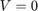
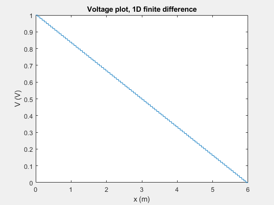

ELEC 4700 Assignment 2: Finite Difference Method
Tyler Armstrong, 101009324
In this experiment, finite difference was used to solve the Laplace equation for a variety of potentials. The effects of mesh size on the solution were examined. All potentials were within a L x W rectangular region.
Contents
1D Case
First, the finite difference method was used to solve for the case where at , and  at . The derivative at the boundaries was set to zero.
A2Laplace1D(100);
As expected, the solution is a straight line. However, it takes on a 'staircase' shape because of the mesh size. Adding more mesh points will cause the steps to become smaller, and they will become more pronounced if fewer points are used.
2D Case
Next, the potential at and was set to . The potential at and was set to 0.
A2Laplace2D(100);
This potential can also be solved analytically. The equation is:
Where This can be calculated in MATLAB.
A2Analytical(100);
The series was evaluated at each point for 100 terms. While the solutions are very similar, the quality of the analtyical solution is heavily dependent on the number of terms in the series. However, it performs significantly better than the finite difference method for larger values of nmesh. The finite difference method can more easily be adapted to different problems by changing the boundary conditions; the analytical solution must be found by hand for any given configuration.
2D Case with Resistive Boxes
This case is almost identical to the case above, only there are two boxes of size Lb x Wb forming a bottleneck in the center of the region. The inside of the boxes have conductivity . The conductivity everywhere else is 1, as before. Plots of the electric field, current, voltage, and conductivity are shown below.
A2Boxes(50);
J1 = [5.1658 3.7629 1.6128]; nmesh = [10 20 50]; plot(nmesh,J1); xlabel('nmesh'); ylabel('Average current')
This plot shows how the average current varies with nmesh. As nmesh increases, the current decreases noticeably. Higher values of nmesh were not tested because of how computation time scales with nmesh.
J2 = [15.3690 1.6128 0.3903 0.2379 0.2254]; sigma0 = [1E-3 1E-2 5E-2 1E-1 10]; semilogx(sigma0,J2); xlabel('\sigma_0 (1/\Omega)'); ylabel('Average current');
This plot shows how the average current varies with the conductivity of the boxes.
J3 = [0.6502 1.6128 4.2316]; Lb = [1 2 3]; plot(Lb,J3); xlabel('L_b (m)'); ylabel('Average current');
This plot shows how the average current varies with the length of the boxes. As the boxes become longer, the average current increases significantly.